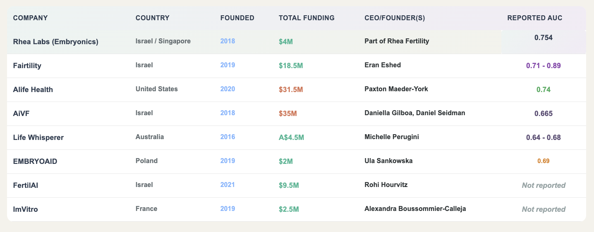

Before the cycle begins, the Egg Freezing Calculator generates personalized predictions from age, AMH, and health factors. Patients see multi-cycle cumulative probabilities for oocyte yield and live birth — enabling truly informed consent.
After retrieval, the Oocyte Quality model (ViT) scores each egg. During culture, the Bonna algorithm evaluates every embryo. Confidence scores flag which predictions are clinically actionable vs. which need human judgment.
The cycle model aggregates all embryo scores into a live birth probability for the entire cohort. The Implantation Window tool pinpoints optimal transfer timing. Results arrive in real-time via WebSocket — no page refreshes, no waiting.

-
MIDL 2020
Data-Driven Prediction of Embryo Implantation Probability Using IVF Time-lapse Imaging
Silver DH et al. — First application of deep learning to raw time-lapse video for implantation prediction. Introduced the MobileNetV2-based feature extractor that became the backbone of Bonna.
AUC 0.82 • PPV 93% -
ESHRE 2020
Deep Learning Model for Improving Embryo Selection and Deselection
Polsky A, Silver DH et al. — Demonstrated that the AI model could both select high-quality embryos and deselect non-viable ones, reducing unnecessary transfers.
83.8% overall accuracy -
Hum Reprod 2022
Embryologist Agreement When Assessing Blastocyst Implantation Probability
Fordham DE, Silver DH et al. — Landmark study: 36 embryologists from 13 countries assessed 136 blastocysts. The AI outperformed every single embryologist, establishing the subjectivity baseline that motivates Stage 01.
AI outperformed all 36 embryologists -
Springer 2024
Enhancing Predictive Accuracy in Embryo Implantation: The Bonna Algorithm
Rave G, Silver DH et al. — The full Bonna ensemble with DoodleP2P segmentation, 8-fold cross-validation, and confidence scoring. Validated on 5,141 embryos across 4 countries. State-of-the-art results on KID benchmark.
AUC 0.754 • State-of-the-art on KID
For each embryo in a cycle, the dashboard displays:
0–100% probability from the 8-fold Bonna ensemble mean
High / Medium / Low — from -log(STD) of 256 inference passes
Age-adjusted parametric sigmoid, 20%→90% across 28→42yr
1 - ∏(1 - FHB2LB × pᵢ) across all viable embryos
The embryologist sees the ranked list, reviews each score, compares against their morphological assessment, and makes the final transfer decision. The AI provides the signal; the human applies the clinical context.